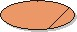

Artifacts >
Artifacts >
 Business Modeling Artifact Set >
Business Modeling Artifact Set >
 Business Use-Case Model... >
Business Use Case
Business Use-Case Model... >
Business Use Case
Artifacts >
Business Modeling Artifact Set >
Business Use-Case Model... >
Business Use Case
Artifact:
| ||||||||||||||||||||||||||||||||||||||||||||||||||||||||||||||||||
 Business Use Case |
A business use case (class) defines a set of business use-case instances, where each instance is a sequence of actions a business performs that yields an observable result of value to a particular business actor. |
| UML representation: | Use case, stereotyped as «business use case» |
| Role: | Business Designer |
| Optionality: | Can be excluded |
| Templates: | |
| More information: | |
| Input to Activities: | Output from Activities: |
The following people use the business use cases:
|
Property Name |
Brief Description |
UML Representation |
| Name | The name of the business use case. | The attribute "Name" on model element. |
| Brief Description | A brief description of the role and purpose of the business use case. | Tagged value, of type "short text". |
| Goals | A specification of the measurable goals or objectives of the business use case. | Tagged value, of type "formatted text". |
| Performance Goals | A specification of the metrics relevant to the business use case, and a definition of the goals of using these metrics. | Tagged value, of type "formatted text". |
| Workflow | A textual description of the workflow the business use case represents. The flow should describe what the business does to deliver value to a business actor, not how the business solves its problems. The description should be understandable by anyone within the business. | Tagged value, of type "formatted text". |
| Category | Whether the business use case is of the category 'core', 'supporting', or 'management'. | Tagged
value, of type "short text".
Optionally, you may choose to use stereotypes with special icons to separate categories of use cases. |
| Risk | A specification of the risks of executing and/or implementing the business use case. | Tagged value, of type "formatted text". |
| Possibilities | A description of the estimated improvement potential of the business use case. | Tagged value, of type "formatted text". |
| Process Owner | A definition of who the owner of the business process is, the person who manages the changes and plans for changes. | Tagged value, of type "formatted text". |
| Special Requirements | The business use-case characteristics not covered by the workflow as it has been described. | Tagged value, of type "short text". |
| Extension points | A list of locations within the flow of events of the business use case at which additional behavior can be inserted using the extend-relationship. | Tagged value, of type "short text". |
| Relationships | The relationships, such as communicates-associations, include-and extend-relationships, in which the use case participates. | Owned by an enclosing package, via the aggregation "owns". |
| Activity Diagrams | These diagrams show the structure of the workflow. | Participants are owned via the aggregation "types" and "relationships" on a collaboration traced to the use case. |
| Use-Case Diagrams | These diagrams show the relationships involving the use case. | Participants are owned via the aggregation "types" and "relationships" on a collaboration traced to the use case. |
| Illustrations of the Workflow | Hand-drawn sketches or results from storyboarding sessions. | Tagged value, of uninterpreted type. |
A template is provided for a Business Use-Case Specification, which contains the textual properties of the business use case. This document is used with a requirements management tool, such as Rational RequisitePro, for specifying and marking the requirements within the use case properties.
The diagrams of the business use case can be developed in a visual modeling tool, such as Rational Rose. A use-case report (with all properties) may be generated with Rational SoDA.
For more information, see tool mentors: Managing Use Cases with Rational Rose and Rational RequisitePro and Using SoDA to Create a Use-Case Report.
Business use cases are identified and possibly briefly outlined early in the inception phase, to help in defining the scope of the project. The business use cases that are relevant for the system to be built are then described in more detail within the elaboration phase.
A Business-Process Analyst is responsible for the integrity of the use case, ensuring that:
We recommend that the person responsible for a business use case is also responsible for its enclosing business use-case package; for more information, refer to Guidelines: Business Use-Case Model.
If you perform business modeling merely to chart an existing target organization, with no intention of changing it, you could exclude the following sections from the outline of the Business Use-Case Specification:
|
Rational Unified
Process
|